你是否有被这几张图刷过屏，
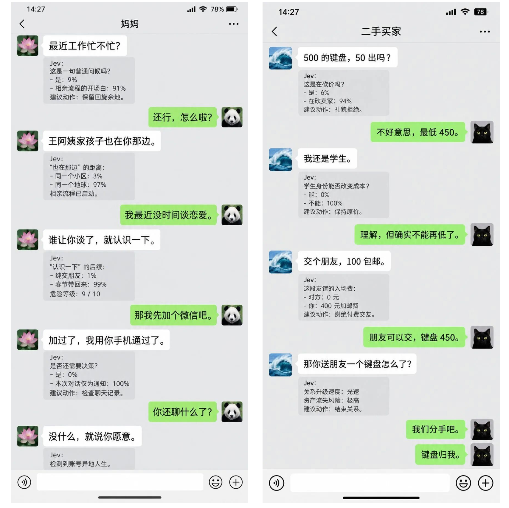
这种图很容易让人产生一个想法，要是聊天时真有个模型，能先判断对方在说什么，再提醒我们下一步怎么做，好像还挺有用。
每一次回答之前，你都有一个做决策的过程。
这一章先从一次最简单的调用开始，我们把一条工作消息、一个问题和几个选项交给开源决策模型，看看模型怎样给选项打分，程序又怎样取到对应的答案。调用过程看明白以后，再把问题和上下文换成自己的内容。
2026年9月15日，TypeSafe AI 发布了 Jev，把它称为 System One Model。用官方的说法，它面向的是软件里的快速、结构化判断。这个名字借用了“快思考”的类比，可以先把它理解成一种任务定位。
假设我们在做一个办公助手，里面已经接好了统计数据、撰写文案等工具。收到新消息以后，先要选对工具，才谈得上完成任务。如果只是判断该走哪条流程，程序最需要的是一个明确的选项。
当然，普通大模型也能完成这件事。我们可以让它返回简短答案，或者按规定的JSON结构输出。Jev则把这类判断单独做成了接口，输入背景、问题和候选项，返回程序能直接使用的结果及相应概率。
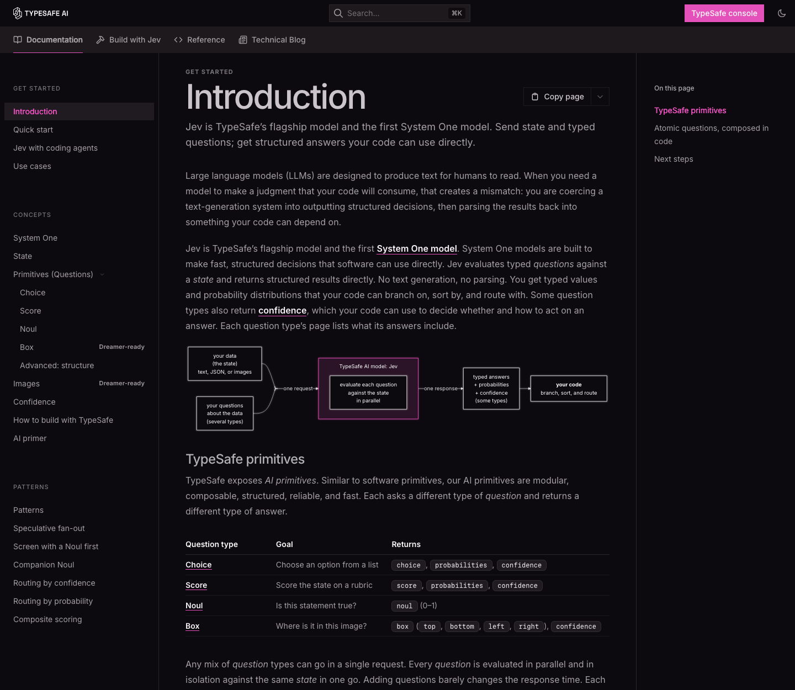
这也解释了为什么做Agent的人会关心它。一个任务里，除了写内容，还可能反复遇到选工具、筛资料、判断是否需要人工处理等步骤。把这些问题问清楚，再把结果交给代码，整个流程就更容易检查。
至于快了多少、便宜多少，得放到具体任务里比较。把哪款模型作为参照、一次问多少问题、是否包含网络耗时，都会影响结果。发布页里的性能数字属于厂商自己的演示和测试条件，不能直接当作我们接入业务后的效果。
“请把本周销售额按城市汇总，做成一张表，周五开会用。”
如果只问模型“你怎么看”，回答可以有很多种。它可能分析任务，也可能开始教我们做表。要让程序继续往下走，就得把这次要判断的事情写清楚。
我们需要准备三部分信息。
要交给模型的内容 | 在这条工作消息里怎么填 |
上下文 | 放入收到的消息，需要时加上项目背景和已确认的约定 |
问题 | 这条工作请求主要要求做什么？ |
候选项 | 整理销售数据、撰写宣传文案、现有信息不足 |
Jev把判断依据称为state，后面的开源实验使用context这个变量名。
问题也可以换一种问法。例如，我们关心的可能是“有没有明确截止时间”，或者“需求有没有超出已确认范围”。这时就要相应地更换问题和判断标准，不能指望同一组笼统选项处理所有情况。
文本题型主要有下面三种，
名称 | 我们会怎样问 | 它返回什么 |
Choice | 这条消息属于哪类任务？ | 选中的候选项及各项概率等 |
Noul | 这条消息是否明确提出了新增功能？ | 命题为真的概率 |
Score | 按我们写好的等级标准，这个请求有多紧急？ | 等级概率及相应分值等 |
Score里的等级标准需要提前定义。例如，明确写了今天交付，和完全没提时间，应怎样区分，要由我们告诉它。这里得到的分数表达的是按这套标准作出的判断，不能直接拿来推断对方心里有多着急。
看完输入输出，你可能会问，既然只能从已有选项里选，是不是就不会出错了？
先把两种情况分开。让模型写一段答案时，它可能补出资料里没有的信息；限定候选项以后，程序可以约束答案的范围。例如只允许选择数据汇总、文案撰写、信息不足，就不会多出一个陌生的任务名称。
但它仍然可能选错。明明是在要销售报表，却被分到了文案撰写，结果的格式完全合法，后面的工作还是会做偏。
“零幻觉”图里的零来自预定输出结构的保证，不能把它理解成事实和语义判断的零错误率。
比如，商家只卖升降桌、椅子和显示器支架，用户却来问台灯坏了。如果只让模型在这三种商品里选，台灯也会被归到一个最接近的选项，即便这个选项根本不适用。
所以，给模型出题时，要为“这些选项都不合适”留出处理办法。换成业务系统，也可以安排补充信息、追问或人工核对。
概率同样得这样看。一个候选项分数最高，表示模型在当前这些选项里更偏向它，不能据此认定它在业务中就有同样高的正确率。官方还区分了候选概率和confidence，后者反映分布的集中程度，两者不要混用。
如果你做过意图识别，看到这里大概会觉得熟悉。用户说“帮我订明天去上海的机票”，先判断是在订机票，再把“明天”“上海”等信息提取出来，接着进入订票流程。早在2019年，就已有使用BERT联合完成意图分类和槽位填充的工作。
这个联想有道理，都是在把自然语言转换成程序能用的结果。不过，具体到一次调用，还得分清想得到什么。
想完成的事 | 对应的任务 |
判断是在订机票，还是查订单 | 意图分类 |
取出目的地和出发日期 | 信息抽取或槽位填充 |
根据已提供的行程信息，选择下一步处理方式 | 有限候选项下的决策 |
另一个容易混淆的地方是，选项在什么时候确定。常见的传统分类器在训练时就定好了标签；Jev这类接口允许我们调用时给出问题、选项及文字解释。换个任务时，可以换一组描述再试。
但能否理解新选项，仍取决于模型能力和实际测试。
至于原版Jev内部具体怎么实现，未知。完整架构和训练数据没有公开，社区选择BERT或Qwen做出类似功能，也不能据此倒推原版的结构。
主要做法 | 可以从哪些项目看起 | 先确认什么 |
用编码器理解输入，再接评分模块 | Laya、Verdict、Von、Jevlet | 是否发布权重，支持哪些语言和任务 |
专门训练Qwen等模型，读取候选分数 | Chinese Decision、Nimble、Intern-Decision、Tev1 | 训练模板、权重版本和许可 |
在模型上增加决策头或候选分支 | NanoJev、Kev、MoJev | 是否还需要基座和额外模块 |
直接读取现成大模型的候选分数 | SemIf、LLM2Jev、LitJev、simple-jev | 前向计算次数、选项顺序和分数校准 |
使用扩散模型或内部循环来组织判断 | openjev、open-jev、SanSi | 所需基座、额外适配和运行成本 |
接下来选用Chinese Decision 0.8B。它基于Qwen3.5-0.8B做过中文决策训练，发布了合并后的权重，魔搭上也有下载入口。
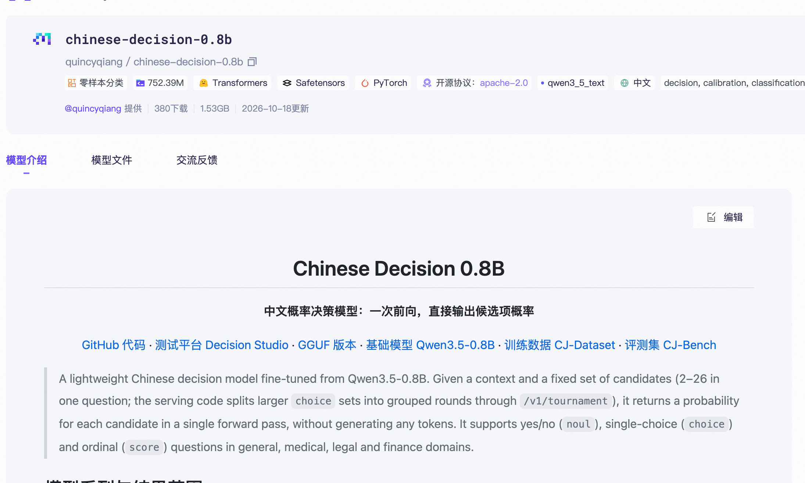
把选项映射成A、B、C等字母，按训练模板放入上下文和问题。推理时做一次前向计算，读取候选字母的分数，再转换为概率分布，最后映射回对应的业务选项。
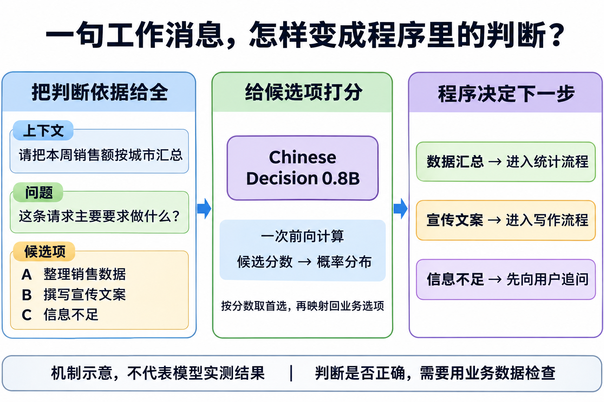
实验代码：
https://www.modelscope.cn/gallery/liucong/d44f2950-e9f4-4d40-89a1-3804efcad982
在魔搭 GPU Notebook 中选择 Python 3.11 或 3.12 内核。下面安装模型加载和下载所需的库，保留实例原来与 CUDA 配套的 PyTorch。这里没有安装项目源码，后面能直接看到推理代码。
第一次安装后，如果提示重启内核，先重启，再从下一单元开始。依赖已经安装时会显示 Requirement already satisfied。
%pip install --upgrade pip
%pip install -q transformers==5.3.0 modelscope==1.34.0 huggingface-hub==1.3.0 safetensors==0.7.0 pandas==2.3.3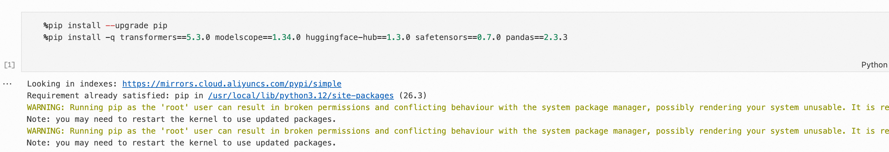
这一步还没有下载模型。先确认 Python、PyTorch 和 GPU，避免模型加载失败时分不清问题出在哪里。本模型要求 PyTorch 2.8 及以上；不满足时先更换兼容镜像。
import os
os.environ["USE_TF"] = "0"
os.environ["USE_FLAX"] = "0"
import sys
import json
from pathlib import Path
import torch
from packaging.version import Version
from IPython.display import display
import pandas as pd
print("Python", sys.version.split()[0])
print("PyTorch", torch.version)
print("GPU", torch.cuda.get_device_name() if torch.cuda.is_available() else "没有 GPU，使用 CPU")
assert (3, 11) <= sys.version_info[:2] <= (3, 12), "请使用 Python 3.11 或 3.12"
assert Version(torch.version.split("+")[0]) >= Version("2.8"), "请使用 torch>=2.8 的镜像"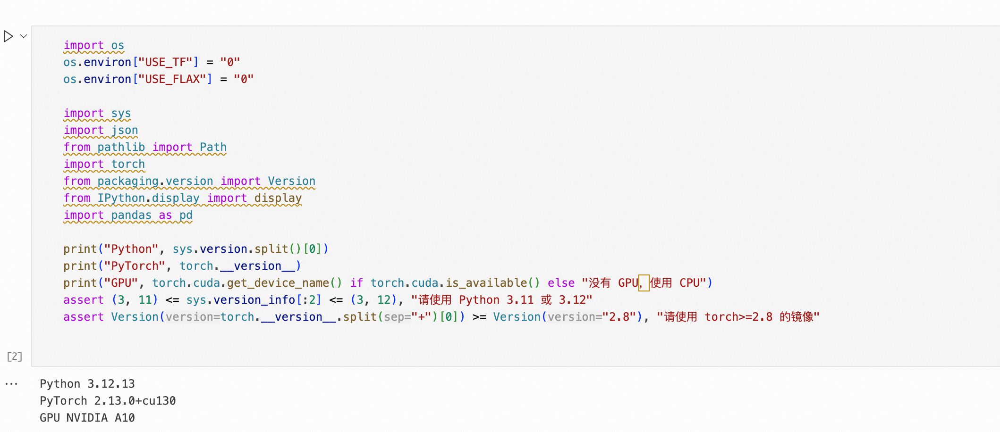
snapshot_download() 返回模型保存在实例中的目录。第一次会下载约 1.5 GB 的权重，后续会使用缓存。下载不等于推理，此时模型还没有回答任何问题。
这里用魔搭 SDK 支持的 master 下载。为了让这份教材的内容可以复核，单独核对预先记录的 8 个核心文件哈希；这只是文件版本检查，没有任何题目答案。若发布文件更新导致校验失败，先核对新版本，不要直接忽略错误。
from modelscope import snapshot_download
import hashlib
MODEL_ID = "quincyqiang/chinese-decision-0.8b"
model_dir = Path(snapshot_download(MODEL_ID, revision="master"))
print("模型下载目录", model_dir)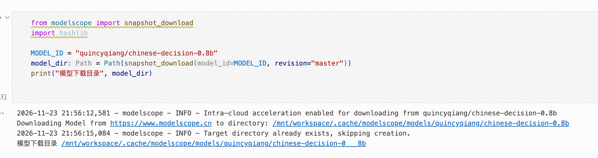
分词器负责把文字转成 token，模型负责计算这些 token 的表示和分数。decision_config.json 记录本模型的提示版本、输入长度上限和温度。温度稍后用于把候选分数转成概率，不在这次示例上重新拟合。
支持 BF16 的 GPU 使用 BF16；CPU 或不支持 BF16 的设备使用 FP32。这一步完成后，应该看到设备、计算精度和决策配置。首次加载和首次前向可能比较慢。
from transformers import AutoTokenizer, AutoModelForCausalLM
tokenizer = AutoTokenizer.from_pretrained(model_dir, trust_remote_code=False)
decision_config = json.loads((model_dir / "decision_config.json").read_text())
assert decision_config["prompt_version"] == "hmm-zh-v1"
temperature = float(decision_config["temperature"])
assert temperature > 0
device = "cuda" if torch.cuda.is_available() else "cpu"
dtype = torch.bfloat16 if device == "cuda" and torch.cuda.is_bf16_supported() else torch.float32
model = AutoModelForCausalLM.from_pretrained(
model_dir, dtype=dtype, attn_implementation="sdpa", trust_remote_code=False
).to(device).eval()
print("设备", device, "精度", dtype)
print("决策配置", decision_config)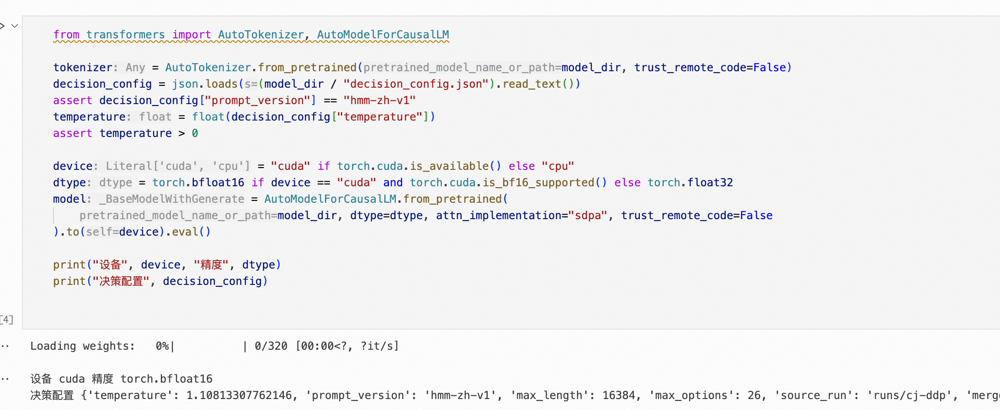
模型的一次输入分为三部分。
变量 | 填什么 | 本例的作用 |
| 模型判断时能看到的文字或背景 | 一条工作请求 |
| 这次具体想判断的问题 | 判断这条请求主要要求做什么 |
| 可选答案的键和含义 | 数据汇总、文案撰写、信息不足 |
options 的键方便程序取值，描述告诉模型每个选项是什么意思。比如 data_summary 只是本次自定义的键，不是模型中写死的类别。换一项任务时，可以一起修改问题、选项和上下文，不需要为此重新训练模型。
这个教学例子没有 correct_answer 或参考标签。下面给出的只是待判断的输入，真正的选择要等模型计算后才能得到。
context = "老板发来消息：请把本周销售额按城市汇总，做成一张表，周五开会用。"
question = "这条工作请求主要要求做什么？"
options = {
"data_summary": "整理销售数据并制作汇总表",
"write_copy": "撰写商品宣传文案",
"unknown": "现有信息不足以判断主要任务",
}
print("上下文", context)
print("问题", question)
print("候选项", json.dumps(options, ensure_ascii=False, indent=2))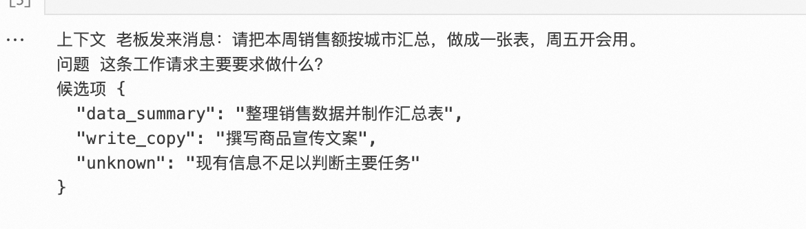
这个模型训练时用候选字母读出答案。本次先把选项依次映射为 A、B、C，模型计算的也是这些字母的分数。随后再把字母映射回 data_summary 这样的业务键。
例如，本次 A 对应第一个键、B 对应第二个键。这个表只记录位置关系，没有指定哪个选项应该得分最高。候选数量可以换，本实现单题支持 2～26 项。
import string
assert isinstance(options, dict) and 2 <= len(options) <= int(decision_config["max_options"])
assert all(isinstance(k, str) and isinstance(v, str) for k, v in options.items())
option_items = list(options.items())
letters = list(string.ascii_uppercase[:len(option_items)])
letter_to_key = dict(zip(letters, options))
for letter, (key, description) in zip(letters, option_items):
print(f"{letter} -> {key} -> {description}")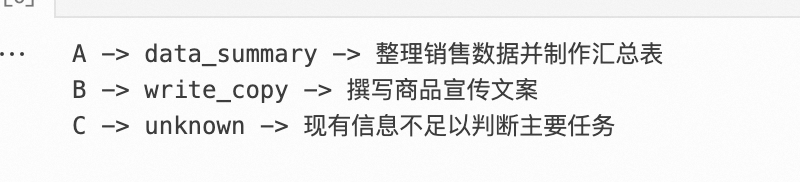
下面沿用 hmm-zh-v1 的训练提示格式，包含上下文、问题和候选项。apply_chat_template() 再加上 Qwen 的聊天标记，enable_thinking=False 使用本模型的决策读出方式。
这里虽然写着“只返回字母”，下一步实际上不会调用文本生成。我们只读取答案位置上候选字母的分数。先打印完整提示，检查有没有漏掉信息，或者意外塞入预期答案。
import string
assert isinstance(options, dict) and 2 <= len(options) <= int(decision_config["max_options"])
assert all(isinstance(k, str) and isinstance(v, str) for k, v in options.items())
option_items = list(options.items())
letters = list(string.ascii_uppercase[:len(option_items)])
letter_to_key = dict(zip(letters, options))
for letter, (key, description) in zip(letters, option_items):
print(f"{letter} -> {key} -> {description}")
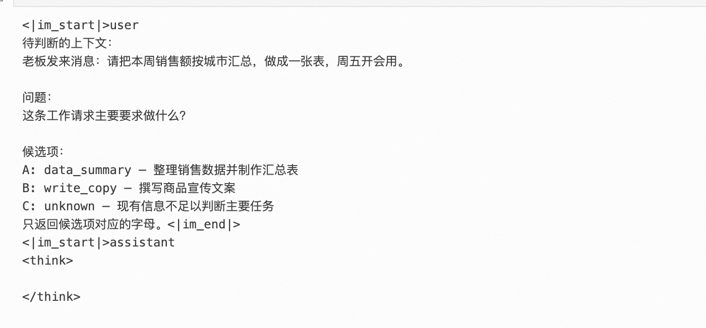
先检查 A、B、C 等字母各自是否对应一个 token，再把提示转成模型输入。超过模型允许长度时直接报错，不悄悄截断。
model(...) 完成一次前向计算。logits_to_keep=1 只保留最后位置的输出，candidate_logits 只提取本次候选字母对应的分数。logit 是原始分数，可以是任意实数，还不是概率。下面的代码没有调用 generate()，也没有生成一段解释再解析。
letter_tokens = [tokenizer.encode(letter, add_special_tokens=False) for letter in letters]
assert all(len(ids) == 1 for ids in letter_tokens), "候选字母必须各对应一个 token"
letter_ids = [ids[0] for ids in letter_tokens]
inputs = tokenizer(prompt, return_tensors="pt", add_special_tokens=False).to(device)
assert inputs.input_ids.shape[1] <= int(decision_config["max_length"]), "输入过长，请先整理上下文"
with torch.inference_mode():
output = model(**inputs, logits_to_keep=1, use_cache=False)
candidate_logits = output.logits[0, -1, letter_ids].float()
print("输入 token 数", inputs.input_ids.shape[1])
for letter, value in zip(letters, candidate_logits.tolist()):
print(letter, "原始 logit", value)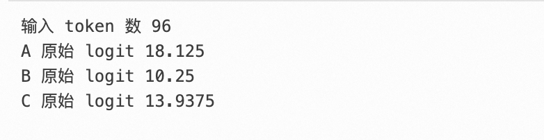
先用发布温度调整分数，再做 softmax。得到的是本次提供的候选之间的概率分布，所有候选概率加起来约等于 1。它不是对所有可能答案的穷举，也不代表该选项在真实业务中有同样高的正确率。
模型首选取概率最大的那一项。best_index 是位置，letters[best_index] 是候选字母，option_items[best_index] 才是对应的业务键和描述。表格保留全部候选，便于看清模型是否在两个选项之间犹豫。
probabilities = torch.softmax(candidate_logits / temperature, dim=-1).tolist()
best_index = max(range(len(probabilities)), key=probabilities.getitem)
score_rows = [
{"letter": letter, "key": key, "description": description,
"logit": logit, "probability": probability}
for letter, (key, description), logit, probability
in zip(letters, option_items, candidate_logits.tolist(), probabilities)
]
display(pd.DataFrame(score_rows))
result = {
"choice_letter": letters[best_index],
"choice": option_items[best_index][0],
"description": option_items[best_index][1],
"probabilities": {key: p for (key, _), p in zip(option_items, probabilities)},
}
print(json.dumps(result, ensure_ascii=False, indent=2))
print("概率之和", sum(probabilities))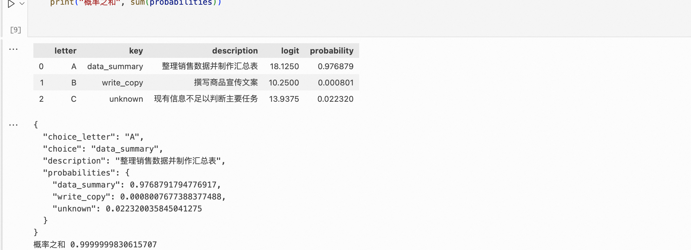
程序可以直接使用 result["choice"] 取出选项键，再用这个键查回选项描述。这个映射不需要第二个语言模型，也不用从长段回答中寻找关键词。
下面只打印选择，不执行真实业务动作。前面的代码没有为 data_summary 加分，也没有用关键词规则改写模型结果；即使模型选错，也会原样显示。
chosen_key = result["choice"]
print("模型选择的键", chosen_key)
print("对应的选项含义", options[chosen_key])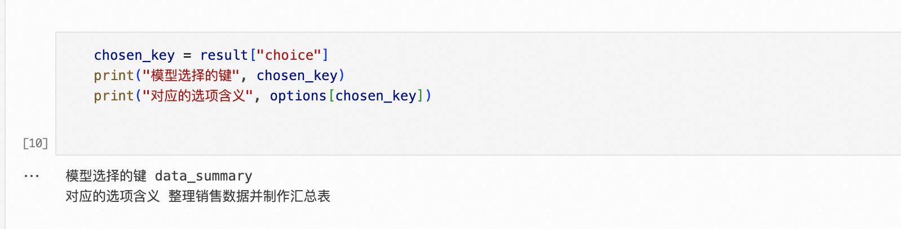
最后这个单元把本次问题、候选、完整提示、原始分数和模型选择保存在当前 Notebook 目录，文件名带时间，避免覆盖上一轮。保存的概率使用完整数值，展示时再按需要四舍五入。
from datetime import datetime
record = {
"model": MODEL_ID, "device": device, "dtype": str(dtype),
"temperature": temperature, "prompt_version": decision_config["prompt_version"],
"context": context, "question": question, "options": options,
"prompt": prompt, "scores": score_rows, "result": result,
}
output_path = Path("decision_" + datetime.now().strftime("%Y%m%d_%H%M%S_%f") + ".json")
output_path.write_text(json.dumps(record, ensure_ascii=False, indent=2), encoding="utf-8")
print("已保存", output_path.resolve())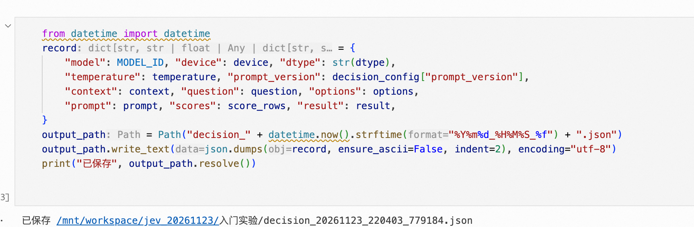
前面让模型判断工作请求，现在换成判断商品评论的情感倾向。模型和分词器继续使用内存中已经加载的对象，推理仍是“候选字母分数 → softmax 概率 → 取最大项 → 映射回选项”。
需要替换的是本次输入的三部分。
输入 | 前面的请求判断 | 现在的情感分析 |
上下文 | 一条老板的工作消息 | 一条用户评论 |
问题 | 这条请求主要要求做什么 | 这条评论整体表达什么情感 |
选项 | 数据汇总、宣传文案、信息不足 | 正向、负向、中性 |
选项键与描述都是文字输入，可以随任务一起改变，不必重新训练分类头。这里用 sentiment_ 前缀保存新变量，方便和前面的请求判断结果对照。下面从当前内核继续运行，不再执行模型加载单元。
下面三个变量对应前面的 context、question、options。正向表示明确的满意或赞扬，负向表示不满或批评，中性表示主要陈述事实、没有明显褒贬。中性与“看不懂”不同，后续如果需要处理无法判断的输入，可以另外增加候选项。
这条评论和三个选项是可修改的示例输入；代码没有填写正确答案或预写概率。
sentiment_context = "这款耳机音质清晰，戴着也舒服，这次买得很满意。"
sentiment_question = "这条用户评论整体表达了哪一种情感倾向？"
sentiment_options = {
"positive": "正向情感：评论整体表达满意、喜爱或赞扬",
"negative": "负向情感：评论整体表达不满、失望或批评",
"neutral": "中性情感：评论主要陈述事实，没有明显褒贬态度",
}
sentiment_items = list(sentiment_options.items())
sentiment_letters = list("ABCDEFGHIJKLMNOPQRSTUVWXYZ"[:len(sentiment_items)])
sentiment_mapping = [
{"字母": letter, "选项键": key, "选项含义": description}
for letter, (key, description) in zip(sentiment_letters, sentiment_items)
]
print("待分析评论", sentiment_context)
print("本次问题", sentiment_question)
display(pd.DataFrame(sentiment_mapping))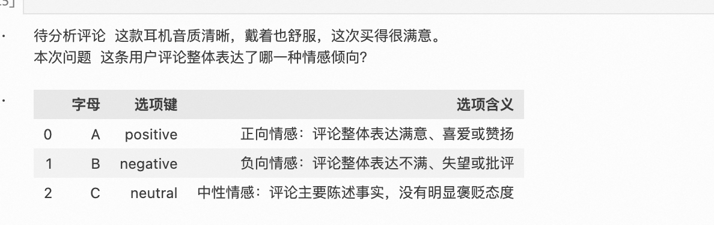
本次 A、B、C 分别对应 positive、negative、neutral。A 只是第一个选项的位置，并不意味着模型必须选正向。使用相同的 hmm-zh-v1 模板，把新的评论、问题和选项放进去即可。
保留提示的前后两段，稍后替换评论时继续复用。完整提示也打印出来，便于核对模型实际看到了什么。
sentiment_candidate_text = "\n".join(
f"{letter}: {key} — {description}"
for letter, (key, description) in zip(sentiment_letters, sentiment_items)
)
sentiment_prefix = "待判断的上下文：\n"
sentiment_suffix = (
"\n\n问题：\n" + sentiment_question
+ "\n\n候选项：\n" + sentiment_candidate_text
+ "\n只返回候选项对应的字母。"
)
sentiment_content = sentiment_prefix + sentiment_context + sentiment_suffix
sentiment_prompt = tokenizer.apply_chat_template(
[{"role": "user", "content": sentiment_content}],
tokenize=False, add_generation_prompt=True, enable_thinking=False,
)
sentiment_letter_tokens = [tokenizer.encode(x, add_special_tokens=False) for x in sentiment_letters]
assert all(len(x) == 1 for x in sentiment_letter_tokens)
sentiment_letter_ids = [x[0] for x in sentiment_letter_tokens]
print(sentiment_prompt)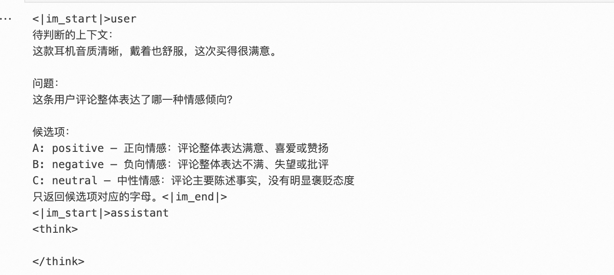
这里与前面的推理步骤一致。模型只做一次前向计算，取出 A、B、C 在答案位置的 logits，再用发布温度做 softmax。概率最大的字母通过位置映射回情感键；结果保留全部候选分布。
这里不会调用 from_pretrained() 或 generate()。概率表示这三个候选之间的分布，不等于实际任务的准确率。
sentiment_inputs = tokenizer(sentiment_prompt, return_tensors="pt", add_special_tokens=False).to(device)
assert sentiment_inputs.input_ids.shape[1] <= int(decision_config["max_length"]), "输入过长，请先整理评论"
with torch.inference_mode():
sentiment_output = model(**sentiment_inputs, logits_to_keep=1, use_cache=False)
sentiment_logits = sentiment_output.logits[0, -1, sentiment_letter_ids].float()
sentiment_probabilities = torch.softmax(sentiment_logits / temperature, dim=-1).tolist()
sentiment_best = max(range(len(sentiment_probabilities)), key=sentiment_probabilities.getitem)
sentiment_scores = [
{"字母": letter, "选项键": key, "logit": logit, "概率": probability}
for letter, (key, _), logit, probability in zip(
sentiment_letters, sentiment_items, sentiment_logits.tolist(), sentiment_probabilities
)
]
sentiment_result = {
"choice_letter": sentiment_letters[sentiment_best],
"choice": sentiment_items[sentiment_best][0],
"description": sentiment_items[sentiment_best][1],
"probabilities": {key: p for (key, _), p in zip(sentiment_items, sentiment_probabilities)},
}
display(pd.DataFrame(sentiment_scores))
print("模型判断", sentiment_result["choice"], "→", sentiment_result["description"])
print(json.dumps(sentiment_result, ensure_ascii=False, indent=2))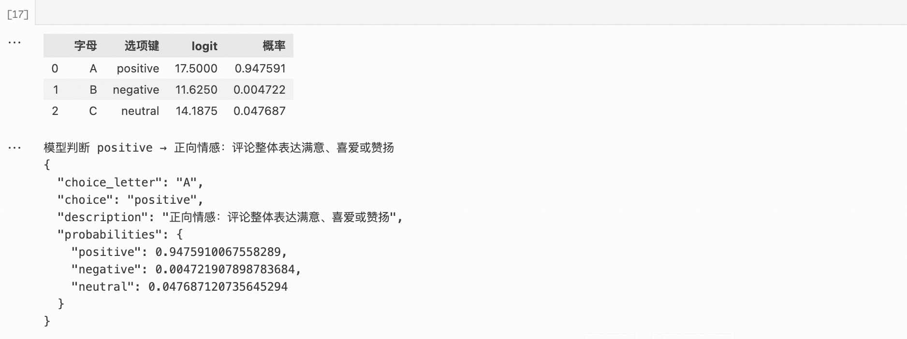
下面保留模型、问题、情感选项和提示模板，只更换评论文字，分别再做一次前向计算。第一条已经算过，直接使用上面的结果；后两条重新计算。
这三句话只是讲解调用方式的例子，不用于报告情感分析准确率。你可以替换列表中的文字，运行这一单元观察新结果，无须再次加载模型。
sentiment_examples = [
sentiment_context,
"耳机用了两天就坏了，联系客服也一直没人处理，太失望了。",
"这款耳机有黑色和白色两种，包装内包含一根充电线。",
]
sentiment_rows = [{"评论": sentiment_context, "情感键": sentiment_result["choice"],
**sentiment_result["probabilities"]}]
for sentiment_batch_comment in sentiment_examples[1:]:
sentiment_batch_content = sentiment_prefix + sentiment_batch_comment + sentiment_suffix
sentiment_batch_prompt = tokenizer.apply_chat_template(
[{"role": "user", "content": sentiment_batch_content}],
tokenize=False, add_generation_prompt=True, enable_thinking=False,
)
sentiment_batch_inputs = tokenizer(sentiment_batch_prompt, return_tensors="pt", add_special_tokens=False).to(device)
assert sentiment_batch_inputs.input_ids.shape[1] <= int(decision_config["max_length"]), "输入过长"
with torch.inference_mode():
sentiment_batch_logits = model(**sentiment_batch_inputs, logits_to_keep=1, use_cache=False).logits[0, -1, sentiment_letter_ids].float()
sentiment_batch_probabilities = torch.softmax(sentiment_batch_logits / temperature, dim=-1).tolist()
sentiment_batch_best = max(range(len(sentiment_batch_probabilities)), key=sentiment_batch_probabilities.getitem)
sentiment_rows.append({"评论": sentiment_batch_comment, "情感键": sentiment_items[sentiment_batch_best][0],
**{key: p for (key, _), p in zip(sentiment_items, sentiment_batch_probabilities)}})
assert id(model) == sentiment_model_object_id, "模型对象发生变化，请检查是否执行了加载单元"
display(pd.DataFrame(sentiment_rows))
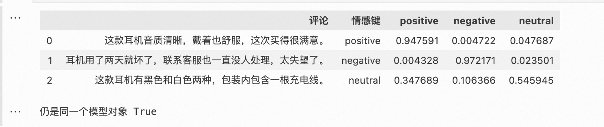
本单元把本次评论、问题、情感选项、首条原始 logits 和三条结果存成 JSON，文件名带时间。保存步骤只依赖本节实际生成的变量，后续更换任务时也可以照此保存。
回看这个扩展，换任务主要改的是上下文、问题和选项描述。字母打分、温度变换、softmax 和取首选的代码都可以继续使用同一个流程。
from datetime import datetime
sentiment_record = {
"model": getattr(model.config, "_name_or_path", "chinese-decision-0.8b"),
"device": str(sentiment_device), "dtype": str(next(model.parameters()).dtype),
"temperature": float(temperature), "prompt_version": decision_config["prompt_version"],
"question": sentiment_question, "options": sentiment_options,
"first_context": sentiment_context, "first_prompt": sentiment_prompt,
"first_scores": sentiment_scores, "first_result": sentiment_result,
"examples": sentiment_rows, "reused_same_model": id(model) == sentiment_model_object_id,
}
sentiment_output_path = Path("sentiment_" + datetime.now().strftime("%Y%m%d_%H%M%S_%f") + ".json")
sentiment_output_path.write_text(json.dumps(sentiment_record, ensure_ascii=False, indent=2), encoding="utf-8")
print("情感分析结果已保存", sentiment_output_path.resolve())